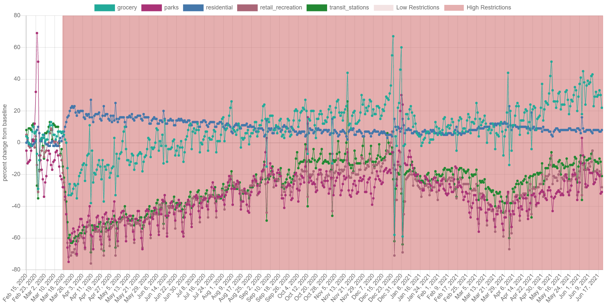
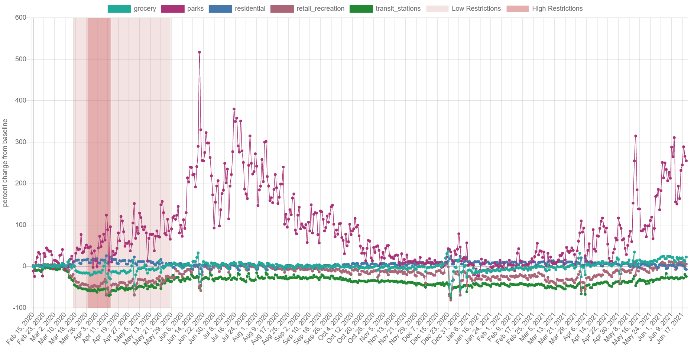
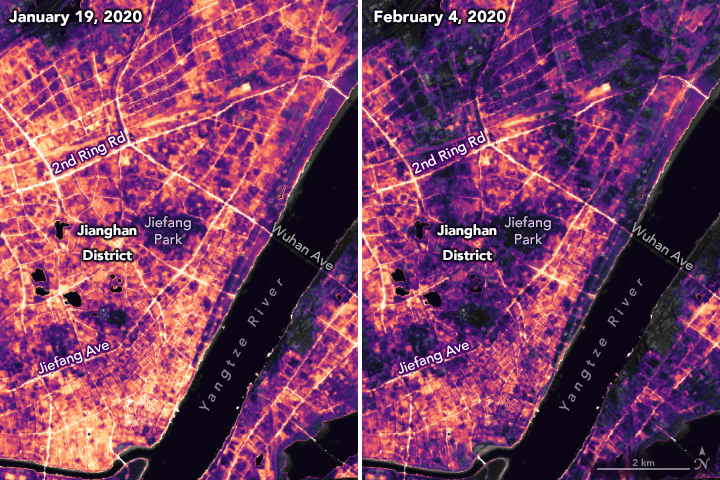
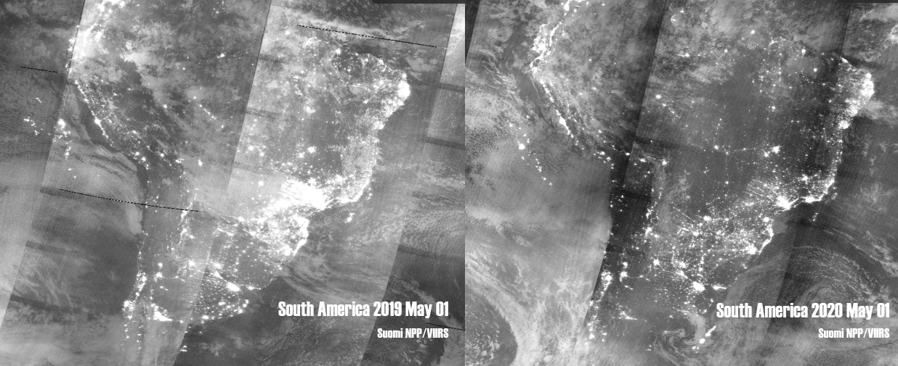
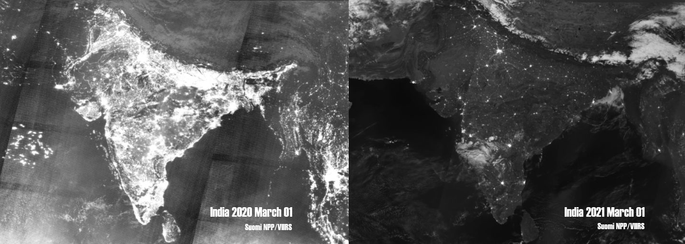
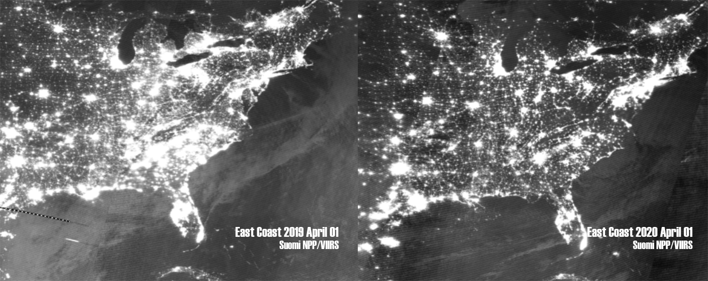
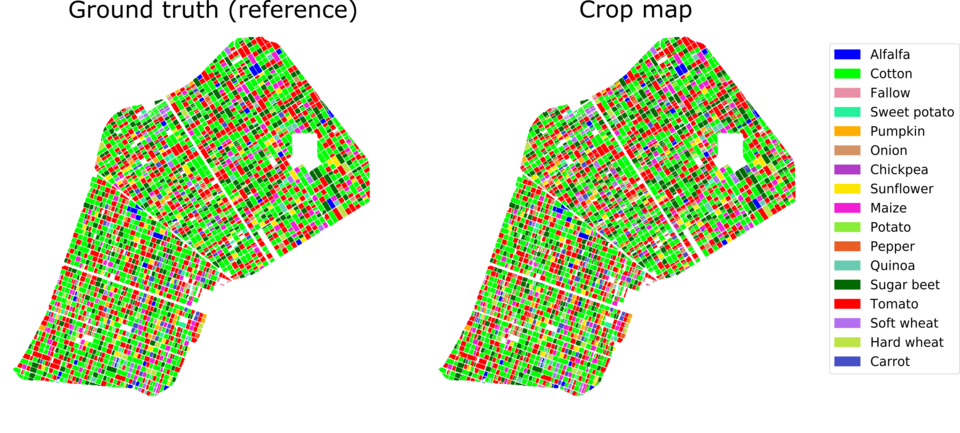
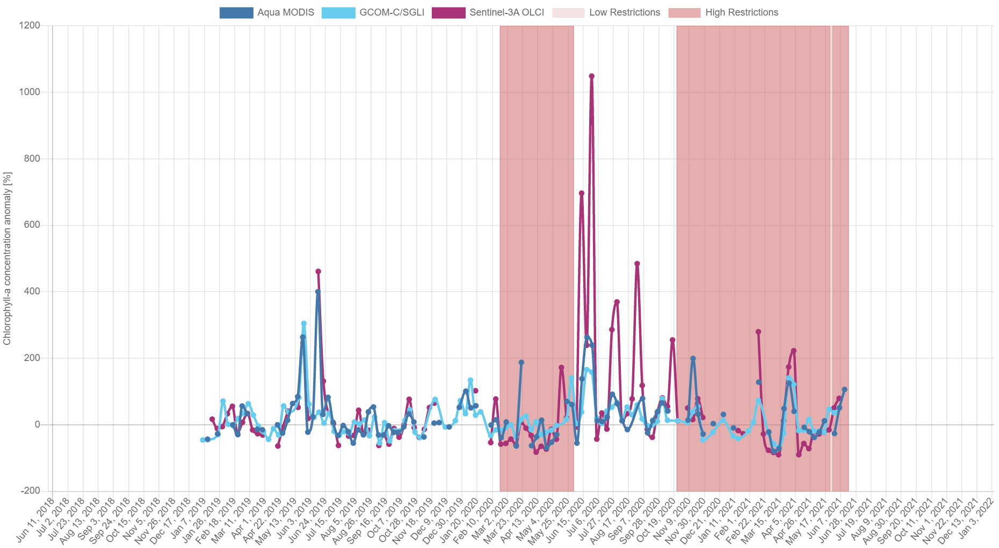
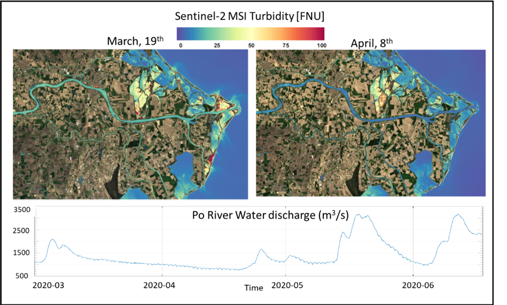

The COVID-19 outbreak , resulting social distancing and other restrictions have led to serious changes globally. Our challenge is to tell a visual story about the impact of pandemic using Earth Observation data and other complementary information.
"IN AMIDST OF DARKNESS, LIGHT PERSISTS"
- MAHATMA GANDHI
SMILESTONES is a website through which we would like to tell our story , which focuses on the lessons from the era of COVID-19. With the use of data provided by the space agencies, we can uplift the quality of life. We have done some case studies which shows how people and even environment could survive and brought best outcome.
Videos
Research
Using the plethora of resources provided to us by the dashboard, we choose a few topics to center our story and research around. Now let's see a brief overview of what we found
Mobility Research
Low, no-restrictions
High restrictions
Nicaragua
Canada
Croatia
India
Taiwan
Argentina
Finland
Brazil
Sweden
Belarus
There was a sudden spike in the mobility regarding grocery in countries with high restrictions. Contradictorily, these countries saw a high covid cases trend.
Nordic countries with low restrictions saw a spike in mobility regarding park visits. Even so, the covid cases trend was low in these countries.


Nightlight Research

A research team has been analyzing images of Earth at night to decipher patterns of energy use, transportation, migration, and other economic and social activities. The detailed images shown, focus on lighting changes in Jianghan District, a commercial area of Wuhan, and nearby residential areas.
Let's see how COVID affected the rest of the nightlight in the World:



Agriculture Research

The data collection by NASA, ESA and JAXA could be crucial in determining the crop pattern, weather attention to be given to crops and understanding soil type and requirements, which directly affect the productivity. Farmers' technical literacy should be improved through teaching programs at local levels to ensure accessibility to the data. This would also help farmers to reap the benefits of selling online like virtual markets and nontraditional market system like in PAMRA Act 2020 of Pakistan .
Air Quality Research
As human behaviou has changed during the pandemic, ongoing measurements form Earth Observing instruments have detected concurrent changes in environmentail factorsx such as a drop in the air pollutant nitrogen dioxide.
Water Quality Research

Shows the chlorophyll-a concentration in the water bodies of Venice.
Chlorophyll-a concentration is an indicator of algae abundance which fluctuates naturally over space and time, as a result of combined atmospheric and oceanic effects (e.g., marine currents and upwelling). In coastal areas, strongly influenced by river inputs and human activities

S2-derived turbidity maps in the last inland branch of the Po River March, 19th 2020 (beginning of lockdown) and April, 8th (middle of lockdown), (Bottom) Time series of the Po river water discharge at Pontelagoscuro station.
There is a mutual role of a decrease of human activities that enhanced the negative anomaly in Chlorophyll concentration.
Our Team
Ramika Pandey
I'm Ramika Pandey, my excitement for projects like these is what fuels me.
Subhansa Singh
It is the curiosity about human impact that has made this science enthusiast a lover of literature.
Bhavya Parasar
Curious to know
Debalina Saha
I'm a learner, science enthusiast and explorer
Leyona Shaju
I have always been interested in Space and Technologies